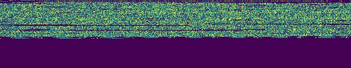
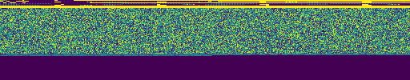
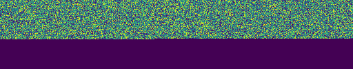
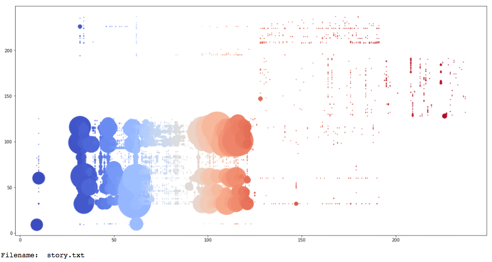
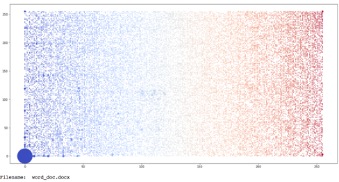
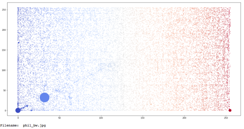
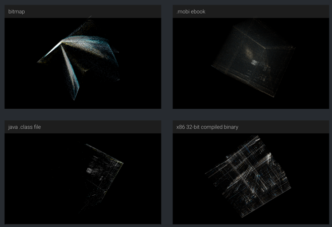
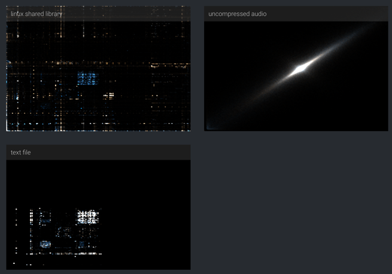

07 MALWARE ANALYSIS
Contents
07 MALWARE ANALYSIS¶
Static Malware Analysis¶
EMBER “Elastic Malware Benchmark for Empowering Researchers” is a dataset curated by Endgame and elastic for static portable executable analysis. See the full paper written by EndGame for more details.
PEFILE is a multi-platform Python module to parse and work with Portable Executable (PE) files. Most of the information contained in the PE file headers is accessible, as well as all the sections’ details and data.
LIEF: Library to Instrument Executable Formats This project aims to provide a cross platform library to parse, modify and abstract ELF, PE and MachO formats.
Dynamic Malware Analysis¶
Cuckoo Sandbox is the most widely-known dynamic sandbox analysis tool for malware analysis. It relies on the creation of a local virtual machine, that is then set up with a Python agent installed within, and then the snapshot function is used to restart the virtual machine at the given configuration. It integrates with VirtualBox for virtual machine deployment.
Any Run is an online interactive malware analysis platform where samples can be submitted online to a virtualised machine, saving the hassle of creating a virtual machine from scratch for testing against.
Useful papers:
Visualising Files¶
Often, we may want to understand the data that resides on a computer, such as what files exist and their content. Furthermore, there exist a wider range of file formats that we may want to examine – ranging from binary data and executable files, through to text files and office documents, and even multimedia content such as image and video formats. In this session, we will begin to examine methods of analysis and visualisation that can help to understand such content beyond typical manual investigation.
Binary File Visualisation¶
All data files stored on a computer system, no matter what their content is, can be expressed as a byte stream. This is the raw data that is processed by the computer to convert this data into a meaningful representation for the end-user, or to inform some other process or executable. As defined on Wikipedia, “the byte is a unit of digital information that most commonly consists of eight bits. Historically, the byte was the number of bits used to encode a single character of text in a computer and for this reason it is the smallest addressable unit of memory in many computer architectures.” An 8-bit representation can be used to express values in the range 0-255 (i.e., 00000000 to 11111111 in binary notation). Working with a byte stream for a file, we can then visualise these numerical values. Given the scale of information represented within a single file, we need a compact visual representation as we may be attempting to plot many values. Pixel visualisation is an effective technique where we can map numerical values to pixel colour values, to create an image based on the underlying numerical data.
  
In this example, we simply map each byte of the file to a colour value running left-to-right, top-to-bottom (i.e., run-length). This preserves order in the file content. The visualisation size is determined by the size of the file, which may be useful, however can make comparative analysis difficult. In the above, we show 3 files (a docx, a docx with password protection, and a docx with AES encryption), and we use a fixed width of 512 bytes. We can begin to examine similarities and differences between these files using the visualisation scheme. Most notable is that the password example shows the additional password data, and some commonalities with the original file, whereas in the AES example the data is fully encrypted and not recoverable without the encryption key.
Another approach is similar to that of ‘n-grams’ in text analytics, where we consider pairs of bytes to form a ‘digram visualisation’. In this setting, we take each pair of bytes and treat them as the X and Y coordinates to plot a point on a scatter plot. Points can be scaled based on number of occurrences if necessary, or colour-coded based on byte position or sequence. Below we can see examples of ‘jpeg’ file, a ‘txt’ file and a ‘docx’ file.
  
In the examples, the scatter plot is bound between the values of 0-255, and so helps maintain a consistent representation to help comparative analysis (e.g., frequency of byte pairs, density of byte pairs). A tri-gram could be created using triplets of bytes and plotted using a 3-D scatterplot (see examples at https://codisec.com/binary-visualization-explained/).
 